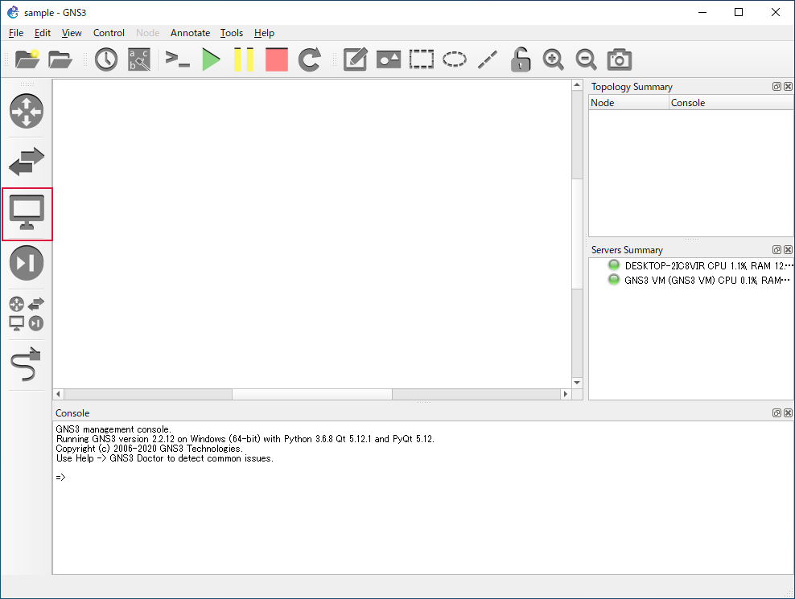
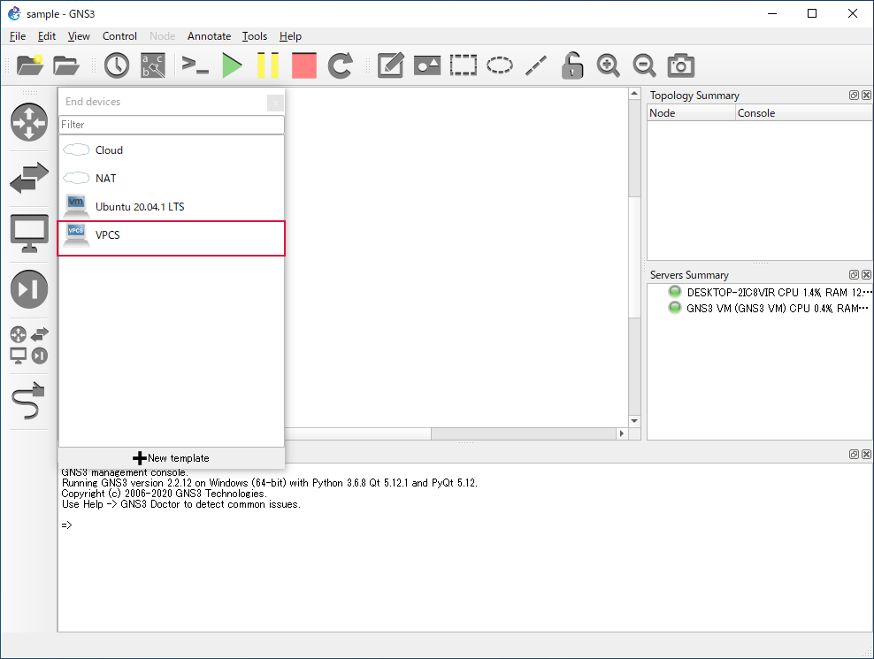
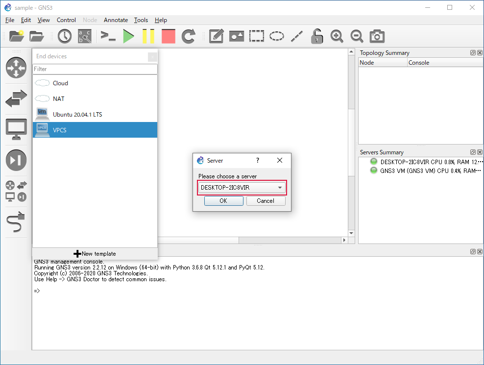
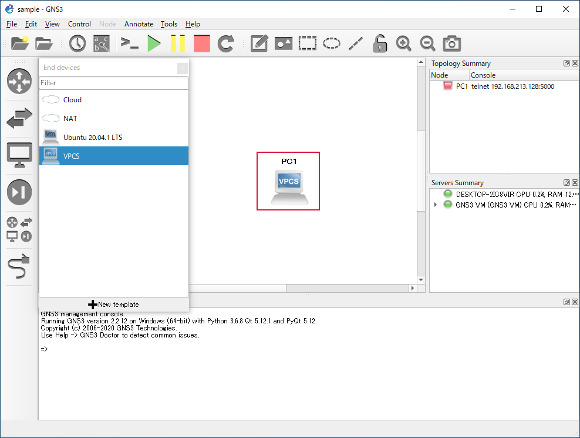

VPCS¶
標準で用意されている End Device の VPCS の配置方法と、主なコマンドの使用例です。
配置¶
Browse End Devices をクリック
ドラッグ＆ドロップでネットワーク図に配置
VPCS を稼働させるサーバーの選択について
今回は「 GNS3 VM 」を選択していますが、ローカルサーバー（パソコンのホスト名）でも問題ありません。
↓
↓
↓
配置終了

IP アドレスの設定／確認¶
ip <ip address> <subnetmask> <default gateway>
ip dns <dns server>
ip dhcp
show ip